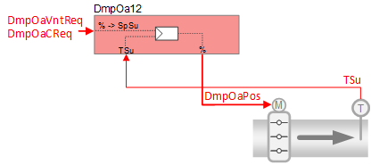
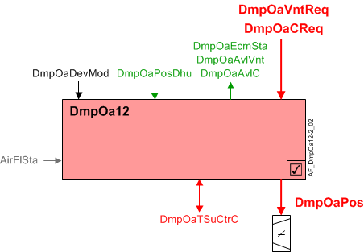

Outside air damper with supply air temperature control (DmpOa12)
 | This application function operates an outside air damper. The request signal for cooling (from the room controller) is transformed into supply air temperature setpoint and is provided to its PID controller for cascaded supply air temperature control. The damper position results from the output of the PID-controller. There is an additional "economizer" functionality (free cooling when available). |
Required elements and how to configure them:
Element | I/O | Signal type |
|---|---|---|
DmpOaPos "Outside air damper position" | On-board output, Outside air damper position | 0…10V or 3-position |
TSu "Supply air temperature" | On-board input, Supply air temperature | any signal type |
Function
The figure below shows BACnet objects associated with this application function. Primary signal flow is summarized as follows:
The request signal(s) are received (DmpOaVntReq / DmpOaCReq) and processed into the output signal for outside air damper position (DmpOaPos).
Basic function: Accept request signal from associated room controller and pass it through a device mode logic switch; Output the result as a command to the BACnet object that controls the device.

| Command or request (or related) |
| Notification of condition or status, or availability |
| Device mode |
| Interlock (internal signal, not a BACnet object; see Interlocks section for additional information) |


Interlocks
Room automation interlocks are internal signals that coordinate interaction between HVAC devices. They are not visible in ABT Site or web interface, but parameters associated with them are. See comment column for hints on parameters that affect interlock functionality.
Signal | Type | Direction | Description | Comment |
|---|---|---|---|---|
AirFlSta | Boolean | In | Air flow status | Parameter EnMonAirFlSta must = Yes. See Configuration section for additional information. |
AirFlCReq | Boolean | Out | Air flow cooling request | See Configuration section for parameters named "...AirFlCReq". |
AirFlDhuReq | Boolean | In | Air flow dehumidification request | See "DmpOaPosDhu" in Configuration section. |
AirFlVntReq | Boolean | Out | Air flow ventilation request | See Configuration section for parameters named "...AirFlVntReq". |
Economizer control
The economizer is enabled (DmpOaEcmSta = On) when the outside air is cold enough for cooling. The switch-on point is Room Temp minus (DiffTRTOaMinC + hysteresis).
Note
Configured value for DiffTRTOaMinC (default = 0) must be entered as a negative number. Hysteresis = 1K.
If AirFlDhuReq is active and dehumidification is occurring, the economizer is disabled (DmpOaEcmSta = Off) and the OA damper is placed at a configurable minimum position (DmpOaPosDhu) that results in more humid air from the zone being recycled through the cooling coil to remove excess humidity (see Configuration).
Supply air temperature control
This AF maps the demand signal from the room temperature controller to a supply temperature setpoint, and performs a control loop to drive the supply temperature to setpoint. If the supply air temperature sensor is not valid, temperature control is performed by the room temperature PID.
Equipment output limits
The maximum damper position is implemented using a reset function with configurable parameters:
X1TOa (default 6°C) and Y1DmpPos (default 20%)
X2TOa (default 18°C) and Y2DmpPos (default 100%)
When the outside air temperature is X1TOa, the maximum damper position is Y1DmpPos.
When the outside air temperature is X2TOa, the maximum damper position is Y2DmpPos.
These values can be adjusted depending on the internal loads of the space.
Ramp-up feature - A configurable rate limit prevents the damper from opening too fast if the air is extremely cold. It does not restrict closing, or manual commands.
The ramp-up function is enabled when the outside air temperature is less than the switch-on point for ramp-up damper (SwiOnPtRup) or the outside air temperature sensor is invalid.
By default, the value is set several degrees above the freezing point. Users will typically not adjust it. This feature allows the damper setting to open to any required level, but it happens slowly enough that other functions in the system have a chance to respond to the cold air and prevent damage. In some installations, a low temperature detector shuts down the system to avoid freezing a coil. This rate limit avoids the inconvenience of shutting the system down.
Cooling available status - DmpOaAvlC is True if:
Device mode (DmpOaDevMod) is Control mode and Economizer is enabled (DmpOaEcmSta is True) and the damper position is open for cooling.
Ventilation available status - DmpOaAvlVnt is True if:
Device mode (DmpOaDevMod) is Control mode and the damper position is open for ventilation.
Configuration
 Objects
Objects
Description | Object | Type | Default value |
|---|---|---|---|
Outside air damper position for dehumidification ▶ When dehumidification is required, set the Outside air damper position to a value that is at least equal to minimum ventilation position (e.g., 20%). Default command must be configured on priority level 17. | DmpOaPosDhu | APrcVal | 0 [%] |
 Parameters
Parameters
Description | Parameter | Default value |
|---|---|---|
Setpoints for supply air temperature | ||
Maximum supply air temperature setpoint for cooling | SpTSuCMax | 32 [°C] |
Minimum supply air temperature setpoint for cooling | SpTSuCMin | 16 [°C] |
Economizer settings | ||
Minimum difference room temperature/outside air temperature for cooling | DiffTRTOaMinC | 0 [K] |
Output limitations | ||
Output limitation characteristics for outside air temperature X1 | X1LmOutTOa | 6 [°C] |
Output limitation characteristics for damper position Y1 | Y1LmOutDmpPos | 20 [%] |
Output limitation characteristics for outside air temperature X2 | X2LmOutTOa | 18 [°C] |
Output limitation characteristics for damper position Y2 | Y2LmOutDmpPos | 100 [%] |
Interlock | ||
Enable monitoring for air volume flow state 0:No | EnMonAirFlSta | 1:Yes |
Switch-on point for air volume flow cooling request | SwiOnAirFlCReq | 4 [%] |
Hysteresis for air volume flow cooling request | HysAirFlCReq | 2 [%] |
Switch-on delay for air volume flow cooling request | DlyOnAirFlCReq | 30 [s] |
Switch-on point for air volume flow ventilation request | SwiOnAflVntReq | 4 [%] |
Hysteresis for air volume flow ventilation request | HysAirFlVntReq | 2 [%] |
Switch-on delay for air volume flow ventilation request | DlyOnAflVntReq | 30 [s] |
Ramp-up function | ||
Switch-on point for ramp-up function | SwiOnPtRup | 5 [°C] |
Ramp-up time for outside air damper | TiRupDmpOa | 2 [min] |
Internal settings – do not change | ||
Temperature unit | TUnit | [°C] |
Temperature difference unit | TDiffUnit | [K] |
Interface
Interface | Description | Type | Ref. | Owned by |
|---|---|---|---|---|
DmpOaPos | Outside air damper position | AO | ◉ | Room segment / Device |
DmpOaSpTSuC | Outside air damper supply air temperature setpoint for cooling | APrcVal | ● | - |
DmpOaDevMod | Outside air damper device mode 1:Off | MPrcVal | ● | - |
DmpOaTSuCtrC | Supply air temperature controller cooling for outside air damper | Controller | ● | - |
DmpOaEcmSta | Outside air damper economizer state 0:Off | BPrcVal | ● | - |
DmpOaCReq | Outside air damper cooling request | ACalcVal | ● | - |
DmpOaVntReq | Outside air damper ventilation request | ACalcVal | ● | - |
DmpOaAvlC | Outside air damper available for cooling 0:No | BCalcVal | ● | - |
DmpOaAvlVnt | Outside air damper available for ventilation 0:No | BCalcVal | ● | - |
DmpOaPosDhu | Outside air damper position for dehumidification | ACnfVal | ● | - |
Engineering and commissioning
Check switching points for economizer.
Check operation of economizer with failed temperature data.
Verify that damper closes when fan is off.
Verify that damper satisfies max of cooling and vent demand.
Verify fan request signal(s).